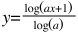
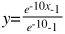
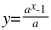
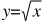
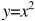
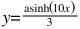
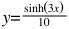
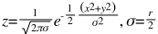

How it Works How it Works
How it Works How it WorksTable of Contents
How DS9 Renders an Image
Scales
Smoothing
Contours
Large Files
Here is a short description on how DS9 decides to paint a pixel a color on the the screen, give an data value... you need a color scale, a contrast/bias pair for the colorscale, clip values for the data, a scale distribution, and finally, the value of the pixel in question.
Step 1. Select a color scale. A color scale is defined as a number of colors (RGB triplets). The number of RGB triplets can vary from just a few to over 200. DS9 contains a number of predefined color scales (Gray, A, B, I8, ...) or the user may load his own color scale.
Step 2. Apply a contrast/bias pair. This step takes the result of step 1 and creates a new array with the contrast/bias applied. The length of the new array will between 200 (for pseudocolor) and 4096 (for truecolor).
Step 3. Calculate the data clip values (low/high data values). The min/max data values may be used or an algorithm may be used to determine the clip data values.
Step 4. Apply the scale distribution. This involves taking the result of step 2, and creating yet another array, this time of size 16384, redistributing the colors, based on the scale algorithm selected (see Scales).
Step 5. Based on your data clip values, and the value of the pixel you have, index into the result of step 4, and you have an index into lookup table (for pseudocolor) and an RGB pair (for truecolor and postscript).
The log function is defined as the following:

as x goes from 0 to 1. The user may specify an exponent a to change the distribution of colors within the colorbar. The default value of a is 1000. Typically, optical images respond well at 1000, IR images as low as 100, and high energy bin tables up to 10000. A value of 10000 closely matches the log function of SAOImage as defined as the following:

The pow function is defined as the following:

as x goes from 0 to 1. The user may specify an exponent a to change the distribution of colors within the colorbar. The default value of a is 1000.
The sqrt scale function is defined as the following:

as x goes from 0 to 1.
The square scale function is defined as the following:

as x goes from 0 to 1.
The asinh scale function is defined as the following:

as x goes from 0 to 1.
The sinh scale function is defined as the following:

as x goes from 0 to 1.
The histogram equalization scale function distributes colors based on the frequency of each data value.
The user may select one of three types of smoothing kernels. Two parameters, r (radius) and k (kernel size), are defined as the following:
Kernel width/height = 2k+1 with r <= k
Boxcar function, width = 2r+1
Tophat function, where the diameter = 2r+1
Gaussian function, defined as:where the mean = 0 and sigma = r/2
The contour algorithm is from an unknown author and originally came from FV. The difference between the two modes are:
block : the image is blocked down before the contour is generated
smooth : the image is smoothed via a Gaussian kernel before the contour is generated.block mode is faster as the smoothing parameter increases. Inversely, smooth mode is much slower as the smoothing parameter increases.
There are several factors that determine if DS9 will be able to load a large file.
32 bit OS vs 64 bit OS : to address very large files, you may need to use an 64 bit OS with a 64bit version of DS9. 32bit apps can address up to 4Gb of address space. However, depending on the OS, this limit may be less. Linux for example, the limit appears to be ~3GB (the OS and shared libs eat up a lot of address space). Under 64bit Solaris, 32bit ds9 has a full 4Gb of space. MacOSX appears to have a limit ~3Gb. Under windows, ~2Gb.
Large File Support: is the ability to sequence thru files larger than 4Gb. DS9 is compiled with LFS.
File system: the OS file system must be able to support files larger than 4Gb. Most recent file systems fully support 4GB>.
Memory Management: There are a number of memory management techniques supported in DS9 that will greatly affect the ability and speed of loading large files:
$ ds9 foo.fits # uses mmap
$ cat foo.fits | ds9 - # allocates memory
$ xpaset -p ds9 file foo.fits # uses mmap
$ xpaset -p ds9 fits foo.fits # allocates memory
Memory Map (mmap) is very fast, limit is memory address space (see above). Allocate is very slow, limit is amount of physical memory + swap partition.
Scanning Data: DS9 needs to determine the min and max data values to correctly display your image. For large files, such as Mosaics and Data Cubes, this can take time. You have the option of using using the FITS keywords DATAMIN/MAX or IRAFMIN/MAX - great if present, bad because they are always wrong. Another option is to specify the low and high clip values via the command line or Scale dialogbox.